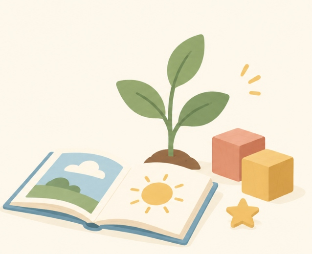

ParentingPrimary School Readiness: It’s More Than Academics
Reading, writing, and counting are only part of what 'ready for Primary 1' really means. Here's what else matters — and why.
Read More →Articles, stories, and ideas from our team and community — on learning, development, and raising confident kids.
No articles in this category yet — check back soon.

ParentingReading, writing, and counting are only part of what 'ready for Primary 1' really means. Here's what else matters — and why.
Read More →Confidence isn't built in one big lesson — it's built in small, repeated moments. Here's what to look out for at home, and how to make the most of them.
Read More → Learning Tips
Learning Tips
A plain-language walkthrough of what happens during an assessment and how to read the report that follows.
Read More → Weekend Club
Weekend Club
A behind-the-scenes look at a typical Saturday, from arrival games to the skills we're quietly reinforcing.
Read More → Parenting
Parenting
Not every struggle needs intervention. Here's how we think about the difference — and when it's worth reaching out.
Read More → Team Stories
Team Stories
Our facilitators share the moments that pulled them into this work — and what keeps them here.
Read More → Learning Tips
Learning Tips
Small changes to the environment and routine that make a real difference for kids who struggle to settle.
Read More →Parent, educator, or part of our community — we'd love to hear your story or perspective. Every submission is reviewed by our team before it appears here.